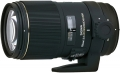
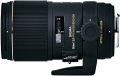

器材库 > 35mm画幅AF定焦镜头 > EX DG 150/2.8 Macro OS APO HSM

详细规格
镜头类型
微距镜头
发布日期
2010-09-21
焦距
150mm
最大光圈
f/2.8
最小光圈
f/22
视角（对角）
16.4
镜头结构
19片/13组
低/超低色散镜片
3片
光圈叶片
9片
最近对焦距离
38cm
最大放大倍率
1倍
驱动马达
HSM（超声波马达）
滤镜口径
72mm
镜头卡口
Canon EF, Nikon AF, Sigma SA
防抖
是
颜色
黑色
尺寸
79.6×150mm
重量
1150g
yq111112015-10-13 01:444.58 分
操作性 4.50耐用性 4.50性价比 4.00解像力 5.00色彩还原 4.50机械结构 5.00
hushaoshu2014-08-07 09:464.67 分
操作性 4.50耐用性 4.50性价比 4.50解像力 5.00色彩还原 5.00机械结构 4.50
iCafe2012-07-14 00:584.58 分
操作性 4.00耐用性 4.50性价比 5.00解像力 5.00色彩还原 4.50机械结构 4.50
林城2012-03-27 19:08
ggzhouxuelong2012-03-22 11:434.58 分
操作性 4.50耐用性 4.50性价比 5.00解像力 4.50色彩还原 4.50机械结构 4.50
adamlovesjojo20082011-09-20 17:294.83 分
操作性 5.00耐用性 4.50性价比 5.00解像力 5.00色彩还原 4.50机械结构 5.00
soulaker2011-04-25 15:434.17 分
操作性 4.00耐用性 4.00性价比 4.00解像力 4.50色彩还原 4.50机械结构 4.00
贝贝爹2011-04-12 10:275 分
操作性 5.00耐用性 5.00性价比 5.00解像力 5.00色彩还原 5.00机械结构 5.00
206050062011-01-15 19:524.5 分
操作性 5.00耐用性 4.00性价比 5.00解像力 5.00色彩还原 4.00机械结构 4.00
产品图 / 样片
适马 EX DG 150/2.8 Macro OS APO HSM

适马 EX DG 150/2.8 Macro OS APO HSM